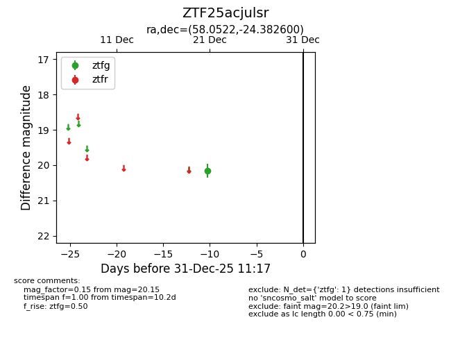
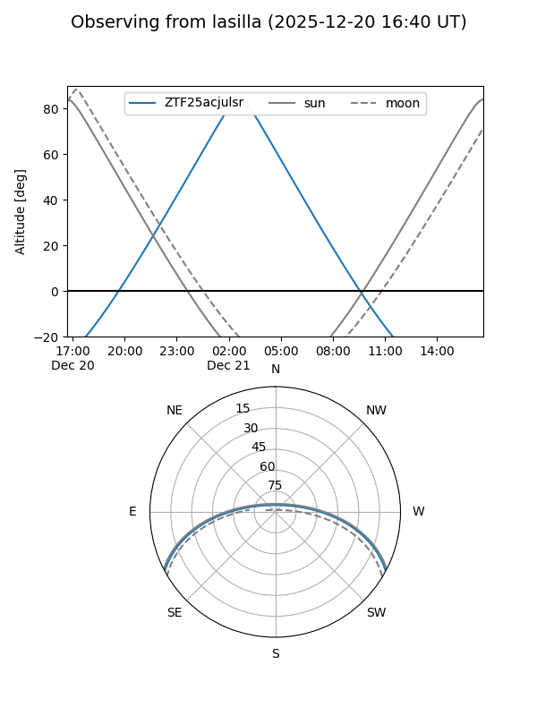
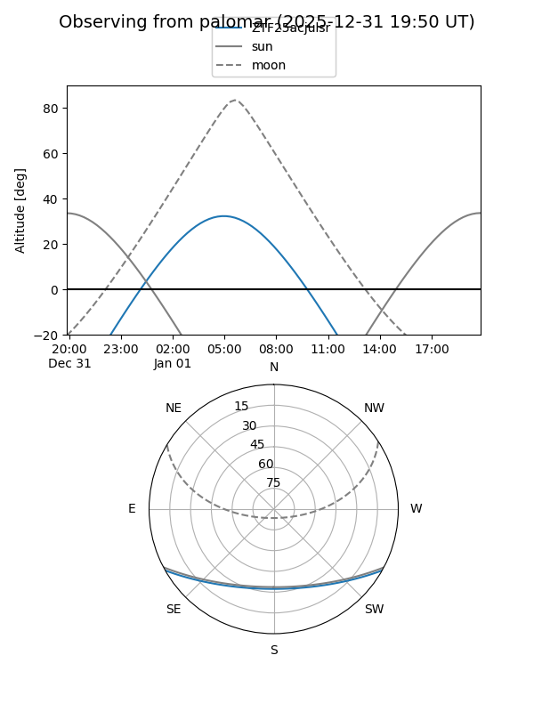

ZTF25acjulsr
Target ZTF25acjulsr at 2025-12-23 06:28
Aliases and brokers:
FINK: fink-portal.org/ZTF25acjulsr
Lasair: lasair-ztf.lsst.ac.uk/objects/ZTF25acjulsr
ALeRCE: alerce.online/object/ZTF25acjulsr
alt names
ZTF25acjulsr (ztf,fink_ztf)
Coordinates:
equatorial (ra, dec) = 58.0522,-24.38260
equatorial (HMS+DMS) = 03:52:12.53,-24:22:57.36
galactic (l, b) = (219.5286,-49.42005)
Flags:
Photometry:
last ztfg=20.15
1 ztfg detections
Lightcurve

Visibility


Additional plots